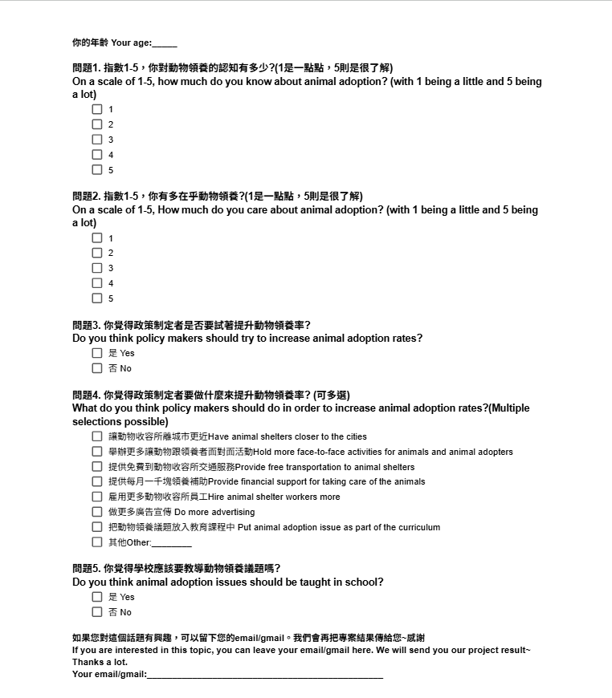

Alson
Alson
Methods
Study Design We watched the documentary of Twelve Nights, which is about stray dogs’ life in the animal shelter in 2013. We got some information from the teacher in SPCA and we went to visit the animal shelter with him. We draw the fish bones that include methods, material, mother nature, machines, management, and manpower, and we make up three smaller points at each bone. After that we came up with some questions for our research. We put all the questions together, discuss those questions with the instructor , and revise the question with instructor advice. Participants We got 60 people that participated in the survey, 50 people from the street we went to, and 15 people from Daan middle school. Materials/Tools During the survey, we used a notebook and a pen to write down all the survey questions, and we printed out a table sheet to record all the answers we got. Procedure We had three different roles in our survey group: speaker, recorder, and helper. The speaker was responsible for approaching people and asking if they were willing to answer the survey. The speaker also introduced ourselves and the project before asking the questions. The recorder wrote down the participants’ answers on a paper table and sometimes helped the speaker if they made mistakes. The helpers showed a poster we made for Question 4, which included many answer choices to make it easier for people to respond. Special Considerations We made sure to give the survey in a clear and respectful way. The speaker needed to speak loudly and clearly so people could hear us. We also only asked one person at one time to avoid people’s answers getting affected by others. To stay consistent, we did not change our introduction or switch jobs during the survey process. In addition, we were respectful by using polite language, not sitting down while asking questions. We stayed in the same place and waited for people to pass by instead of chasing them. We tried to avoid bias so that our results would be fair and accurate. For the poster for question 4, we have an English version for foreigners to answer more easilier. We have a poster for the question that has many options, we also have an English version for this question so the foreigners can answer too. (We did ask some foreigners.) It belongs in Special Considerations. Data Analysis We first compile the answers we got, sort them, and make the data into pivot tables of each question. We then analyzed the data, like the most common or least common answer, percentages, etc, and came up with conclusions based on comparisons and logical thinking of the data.
